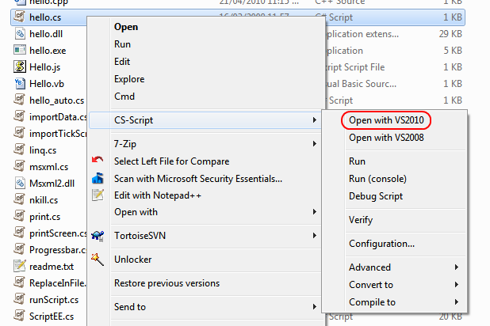
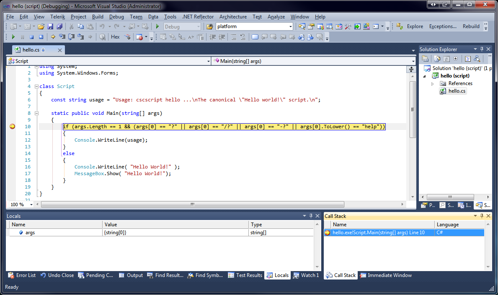

Microsoft Visual Studio 2010 (v10.0) is a managed IDE for .NET
4.0. It is similar to any other Visual Studio versions. CS-Script integration model for VS2010 comes in two forms:
- Integration with Visual
Studio 2012 C# Express edition. This integration is described in ths document.
- Complete
integration with VS2010 (all editions except Express). This
integration is implemented as Visual Studio Extension and it is
available from Visual Studio Gallery. This integration is note covered by this document and it is described in the CS-Script Visual Studio Tools the Online Tutorial.
CS-Script is integration with VS2010 Express
The way how the CS-Script is integrated with VS2010 Express is
virtually the same as with VS2008/2005/2003 (see previous chapters).
Usage
Open the script in Visual Studio by using shell extension:

This is the screenshot of the debugging "Hello World!" sample (hello.cs
file).

Note:
- You can significantly improve
the level of the development convenience by enabling CS-Script toolbar
and CS-Script code snippets from Visual Studio
Integration console.
- You can control how the how the script is loaded in the VS2010 by placing the //css_dbg directive in your script.
See Also
Debugging tutorial
| Script Library